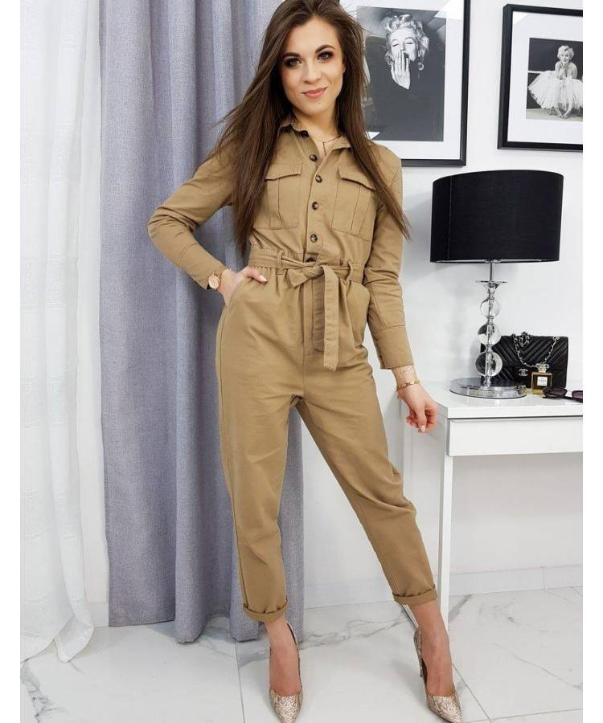

Vyriški kostiumai
 Pereiti į pagrindinį turinį
I-VII 10.00 - 20.00 +3706 24 27 111 info@1000kostiumu.lt
Toggle navigation Pagrindinis Apie mus Galerija Kontaktai Lietuvos gamintojo vyriškų drabužiųišparduotuvė
Nemokamas drabužių taisymas. Visų ūgių ir dydžių kostiumai.
Naujausi modeliai, aukšta kokybė, didelis pasirinkimas, žemos kainos Galerija Kontaktai
1000 kostiumų vienoje parduotuvėje
Nemokamas drabužių taisymas. Visų ūgių ir dydžių kostiumai.
Naujausi modeliai, aukšta kokybė, žemos kainos Galerija Kontaktai
Reikia profesionalios konsultacijos? Padėsime Jums išsirinkti. Susisiekite su mumis Kontaktai
Lietuvos gamintojo vyriškų drabužių išparduotuvė
Nemokamas drabužių taisymas . Labai didelis vyriškų kostiumų pasirinkimas, taip pat didelė pasiūla švarkų, kelnių, marškinių bei aksesuarų. Aukščiausios kokybės gaminiai, naujausi modeliai, žemos kainos, Lietuvos gamintojo tiesioginė parduotuvė.Parduotuvės asortimentas
Kostiumai Švarkai Kelnės Marškiniai Aksesuarai Paltai ir striukėsKostiumai
1000 kostiumų vienoje parduotuvėje. Turime visų ūgių, dydžių ir modelių kostiumų: slim fit (įliemenuoti kostiumai) ir klasikiniai, tarp jų prailginti aukštiems (dydžiai nuo 90 iki 122), standartinio ūgio (dydžiai nuo 42 iki 64) ir pamažinti (dydžiai nuo 22 iki 32). Kostiumų modelių kirpimas pritaikytas Lietuvos vyrams, todėl praktiškai su visais kostiumais jausitės patogiai ir atitiks Jūsų figūrą, dažniausiai net neprireikia papildomos siuvėjos pagalbos. Visgi jei prireiks, pakoreguosime nemokamai, tam kad atrodytumėte idealiai. Virš 20 metų dirbdami su žymiais pasaulyje vardais, garantuojame Jums aukščiausią gamybos kokybę, naujausius modelius ir madingiausias medžiagas. Viso kostiumo kaina nuo 119eur.
Susisiekite
Kontaktai
Mus rasite: Išparduotuvių centras "Outlet Park"
Adresas: Verkių g. 29, Vilnius
Telefonas: +3706 24 27 111
El.paštas: info@1000kostiumu.lt
Darbo laikas: I-VII 10.00 - 20.00
Sekite mus: